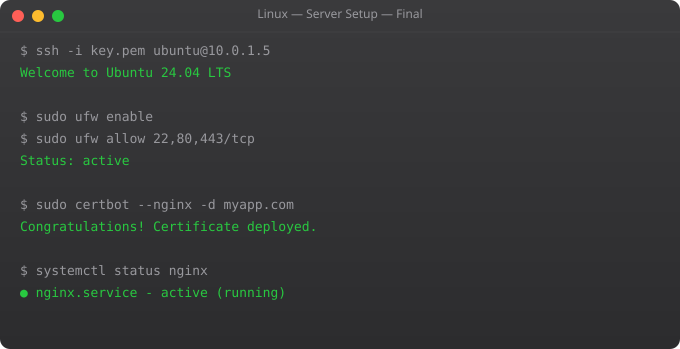

Linux Full Tutorial -- Part 12: System Hardening & Security

A freshly deployed Linux server is exposed to the internet and under constant attack within minutes. Automated scanners probe for weak SSH passwords, unpatched services, and default credentials. System hardening is not paranoia -- it is standard practice. Every production server needs a baseline security configuration before it handles real traffic.
SSH Hardening
# Edit /etc/ssh/sshd_config
sudo nano /etc/ssh/sshd_config
# Key settings:
Port 22 # Consider changing to non-standard port
PermitRootLogin no # NEVER allow root SSH login
PasswordAuthentication no # Use keys only, disable passwords
PubkeyAuthentication yes # Enable key-based auth
MaxAuthTries 3 # Limit login attempts
LoginGraceTime 30 # 30 seconds to authenticate
AllowUsers ubuntu deploy # Whitelist specific users
X11Forwarding no # Disable if not needed
ClientAliveInterval 300 # Disconnect idle sessions after 5 min
# Apply changes
sudo sshd -t # Test config for syntax errors
sudo systemctl restart sshdfail2ban -- Block Brute Force
sudo apt install fail2ban -y
# /etc/fail2ban/jail.local
[DEFAULT]
bantime = 3600 # Ban for 1 hour
findtime = 600 # Look at last 10 minutes
maxretry = 5 # 5 failures triggers ban
[sshd]
enabled = true
port = ssh
filter = sshd
logpath = /var/log/auth.log
maxretry = 3 # SSH: 3 attempts only
bantime = 86400 # Ban for 24 hours
sudo systemctl enable --now fail2ban
# Monitor fail2ban
sudo fail2ban-client status
sudo fail2ban-client status sshd
sudo fail2ban-client set sshd unbanip 1.2.3.4 # Unban an IPUser Security
# Create a deploy user with no login shell
sudo useradd -r -s /bin/false deploy
# Add user to sudo group
sudo usermod -aG sudo ubuntu
# Lock unused accounts
sudo passwd -l username # Lock account
sudo usermod -L username # Lock account
# Audit users with shell access
grep -v "/nologin\|/false" /etc/passwd
# Check sudo access
cat /etc/sudoers.d/*
sudo visudo # Edit sudoers safely
# Require password for sudo (remove NOPASSWD)
# In /etc/sudoers:
# ubuntu ALL=(ALL:ALL) ALL (requires password)
# ubuntu ALL=(ALL) NOPASSWD: /usr/bin/docker (passwordless for one command)Firewall with ufw
sudo ufw enable
sudo ufw default deny incoming # Block all incoming by default
sudo ufw default allow outgoing # Allow all outgoing
# Allow only what you need
sudo ufw allow 22/tcp # SSH
sudo ufw allow 80/tcp # HTTP
sudo ufw allow 443/tcp # HTTPS
sudo ufw allow from 10.0.0.0/8 # Allow internal network
# More restrictive SSH (allow from specific IP)
sudo ufw delete allow 22
sudo ufw allow from 203.0.113.0 to any port 22
sudo ufw status verbose # Verify rules
# Rate limiting (built-in for SSH)
sudo ufw limit ssh # Allow 6 attempts per 30 secondsSecurity Audit Commands
# Find SUID/SGID files (potential privilege escalation)
find / -perm -4000 -type f 2>/dev/null # SUID files
find / -perm -2000 -type f 2>/dev/null # SGID files
# Find world-writable files
find / -perm -0002 -type f 2>/dev/null | grep -v proc
# Check listening services
ss -tlnp
# Check for failed login attempts
grep "Failed password" /var/log/auth.log | tail -20
grep "Invalid user" /var/log/auth.log | awk "{print $8}" | sort | uniq -c | sort -rn
# Check recently modified system files
find /etc -mtime -7 -type f
# Install and run Lynis security audit
sudo apt install lynis
sudo lynis audit systemFrequently Asked Questions
How do I set up SSH key authentication?
On your local machine: ssh-keygen -t ed25519 -C "your@email.com". Copy key to server: ssh-copy-id ubuntu@server or manually add the public key to ~/.ssh/authorized_keys on the server. Then set PasswordAuthentication no in sshd_config.
What is the most important security setting for SSH?
PasswordAuthentication no -- this alone prevents the majority of brute force attacks. Combined with fail2ban and a strong key, SSH is practically impenetrable. Root login should also be disabled: PermitRootLogin no.
How do I monitor who is logging in to my server?
last shows recent logins. lastb shows failed login attempts. who shows current logged-in users. w shows current users and what they are doing. grep "Accepted\|Failed" /var/log/auth.log for SSH authentication events.
What is unattended-upgrades?
A package that automatically installs security updates without manual intervention. sudo apt install unattended-upgrades; sudo dpkg-reconfigure unattended-upgrades. Ensures your server stays patched against known vulnerabilities even if you forget to update manually.
How do I check if my server has been compromised?
Check: last and lastb for unusual logins. ps aux for unexpected processes. ss -tlnp for unknown listening ports. crontab -l for unknown scheduled tasks. find /tmp -type f -executable for suspicious files. Check /etc/passwd for new users. Install rkhunter or chkrootkit for automated checks.
You have completed the full Linux series. Combined with the DevOps Roadmap and the AWS Linux series, you now have a complete foundation for cloud infrastructure engineering.
Key takeaways
- Production Linux is mostly hygiene: unattended-upgrades for security patches, fail2ban for brute-force protection, monitoring for everything.
- Backups that aren't tested aren't backups. Schedule a quarterly restore drill — your future self will thank you.
- Document the why behind every change. `/etc` should live in git (use `etckeeper`). Commit messages explain what your three-months-from-now self forgot.
- Next: take this Linux fluency into the cloud (the AWS + Linux Combo series in this track), or into containers (Docker series). Both build directly on what you now know.
SELinux and AppArmor Overview
# AppArmor: default on Ubuntu
sudo aa-status # Show AppArmor status
sudo aa-complain nginx # Complain mode (log but allow)
sudo aa-enforce nginx # Enforce mode (block violations)
sudo aa-audit nginx # Audit mode (log all access)
sudo aa-disable nginx # Disable profile
# View AppArmor denials in logs
sudo dmesg | grep apparmor | grep denied
sudo journalctl -xe | grep apparmor
# Create AppArmor profile for custom app
sudo aa-genprof /usr/local/bin/myapp # Generate profile interactivelyIntrusion Detection with AIDE
sudo apt install aide
# Initialise database (takes 5-10 minutes)
sudo aideinit
sudo cp /var/lib/aide/aide.db.new /var/lib/aide/aide.db
# Check for changes since last baseline
sudo aide --check
# Check specific directory
sudo aide --check --config=/etc/aide/aide.conf.d/31_aide_python
# Automate with cron (daily check, email report)
echo "0 6 * * * root aide --check | mail -s 'AIDE Report' admin@example.com" | sudo tee /etc/cron.d/aide-checkrkhunter: Rootkit Detection
sudo apt install rkhunter
# Update database and run check
sudo rkhunter --update
sudo rkhunter --check --skip-keypress
# Weekly automated check
echo "0 3 * * 0 root rkhunter --check --skip-keypress | mail -s 'rkhunter report' admin@example.com" | sudo tee /etc/cron.d/rkhunter
# View rkhunter log
sudo cat /var/log/rkhunter.log | grep -E "Warning|Infected"